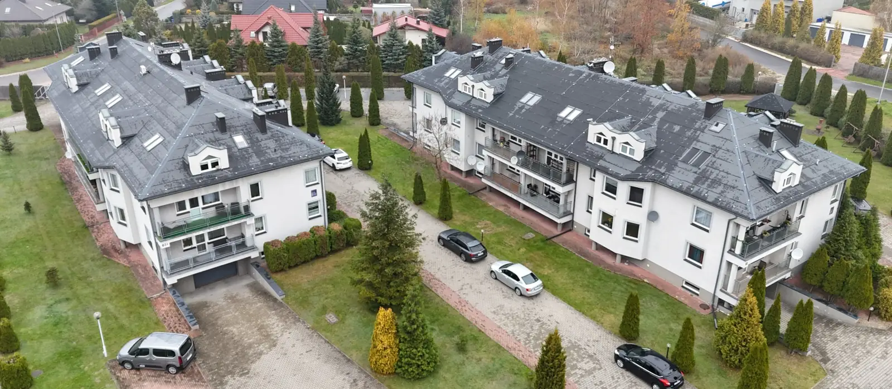
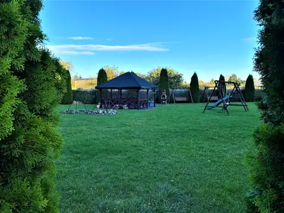
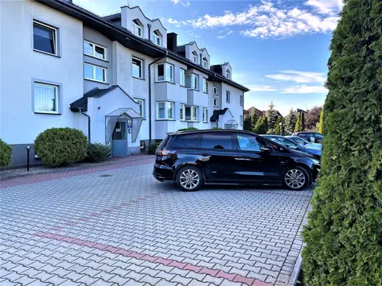
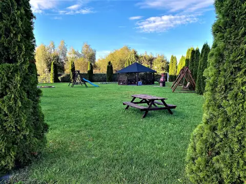
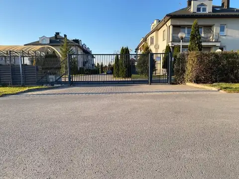
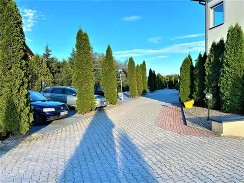

Wspólnota Mieszkaniowa Kilińskiego 61
Dwa budynki pod jednym dachem wspólnoty. Ogłoszenia Zarządu, dokumenty i rozliczenie każdego lokalu w jednym miejscu.
Wejdź do Strefy mieszkańcaul. Kilińskiego 61 i 61A, 97-500 Radomsko
Ogłoszenia Zarządu
Najważniejsze informacje dla wszystkich mieszkańców. Sprawy dotyczące konkretnego lokalu, w tym noty rozliczeniowe, są widoczne tylko po zalogowaniu do Strefy mieszkańca.
W podglądzie treści ogłoszeń są przykładowe.
Noty rozliczeniowe za listopad są już dostępne
Stany wodomierzy odczytano zdalnie 1 listopada. Notę swojego lokalu znajdą Państwo w Strefie mieszkańca, w zakładce E-Kartoteka. Termin płatności: 10 listopada.
Przegląd przewodów kominowych
Kominiarz odwiedzi budynek 61 w czwartek 19 listopada, a budynek 61A w piątek 20 listopada, w godzinach 9:00-15:00. Prosimy o udostępnienie lokali.
Odpady wielkogabarytowe
Meble, opony i zużyty sprzęt elektroniczny prosimy zgłaszać Zarządowi przed wystawieniem przy wiacie. Wiata śmietnikowa jest zamykana.
Informacja stała
O wspólnocie
Wspólnotę tworzą właściciele lokali w dwóch budynkach przy ulicy Kilińskiego 61 i 61A, na zamkniętym osiedlu na Miłaczkach. Wspólnota działa od 15 października 2007 roku na podstawie ustawy o własności lokali.
Ulica nosi imię Jana Kilińskiego, szewca i radnego Warszawy, jednego z przywódców insurekcji kościuszkowskiej.
- Dwa budynki, w każdym 14 lokali mieszkalnych i 6 garaży podziemnych
- Działki o łącznej powierzchni 4872 m², do tego dzierżawiony teren rekreacyjny z altaną i placem zabaw
- Zdalny odczyt wodomierzy i brama otwierana telefonem
- Zamykana wiata śmietnikowa i wiele miejsc parkingowych
- Światłowód doprowadzony do każdego mieszkania





Strefa mieszkańca
Każdy z 29 lokali ma własny login i hasło. Po zalogowaniu właściciel widzi tylko swój lokal, a nota za kolejny miesiąc pojawia się sama 1 lub 2 dnia miesiąca.
- E-Kartotekanota rozliczeniowa mieszkania i garażu, z historią poprzednich miesięcy
- Informacje Zarządunowe ogłoszenia i informacje stałe
- Regulamin Wspólnotyzawsze aktualna wersja do pobrania
- Uchwały na zebranietreść uchwał przed zebraniem i wyniki po nim
Dokumenty publiczne
Regulamin Wspólnoty i uchwały są dostępne dla właścicieli w Strefie mieszkańca. Tu znajdują się dokumenty dla wszystkich.
Kontakt z Zarządem
Od 1 stycznia 2022 roku wszystkimi sprawami administracyjno-finansowymi zajmuje się Zarząd Wspólnoty.
- wmkilinskiego61@gmail.com
- Adres do korespondencji
- Wspólnota Mieszkaniowa „Kilińskiego 61”
ul. Kilińskiego 61 m A4, 97-500 Radomsko - Dane do faktur
- Wspólnota Mieszkaniowa przy ulicy Kilińskiego 61 w Radomsku
NIP 772-233-40-04, REGON 100435114
W jakich sprawach pisać do Zarządu
- saldo konta lokalu i opłaty
- zmiana właściciela lokalu
- awarie hydrauliczne poza lokalem
- oświetlenie i usterki części wspólnych
- czystość na terenie wspólnoty
- odpady po remoncie i wielkogabarytowe
Polityka prywatności
Administratorem danych osobowych jest Wspólnota Mieszkaniowa „Kilińskiego 61” w Radomsku. Dane właścicieli lokali przetwarzamy w celu zarządzania nieruchomością wspólną i rozliczania opłat (art. 6 ust. 1 lit. c RODO). Strona publiczna nie używa plików cookies. W Strefie mieszkańca używane jest jedno niezbędne cookie sesji, które znika po wylogowaniu. Połączenie jest zawsze szyfrowane (https).